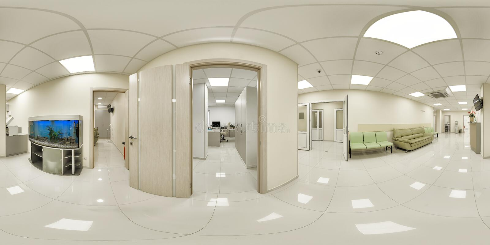
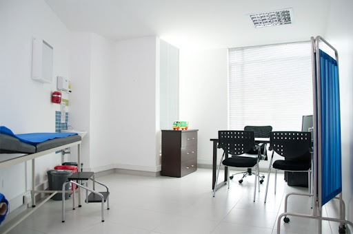
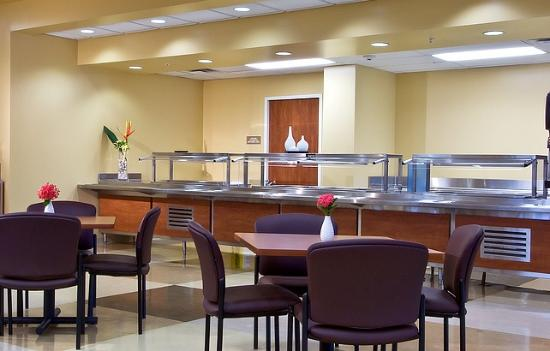
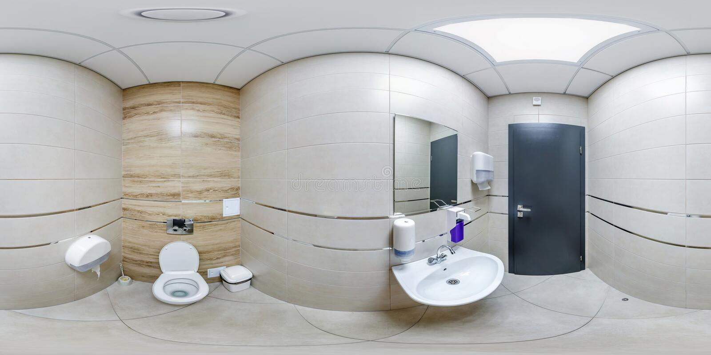

Acontinuacion, podra observar las instalaciones emdiante fotos donde podra identificar
de las salas y consultorios, para una mayor difelidad visite el vide de recorrdio virtual.
¡Vistazo Instalaciones! Asi luce nuestra centras vista desde arriba.

Lobby Valladolid La sala central, esta dedicada para su comodidad y estancia en espera de algun tipo de servicio.Corredores Un vistazo a uno de nuestros corredores para trasladarse a cualquiera de nuetras ubicaciones

Consultorio General Nuetsros consultoriso son de la mejor calidad ofreciendo servicios clinicos con higiene

Cafeteria y comedorNuestra cafeteria cuenta con la mayor comodidad para que usted pueda ingerir algun tipo de alimento que su medico le haya recomendado para usted o sus familiares

SanitariosArea sanitaria para uso exlucisvo de nuestros pacientes.Sala de quirofanos Vistazo general de nutras salas de quirofanos de nuestra central.Hospital Valladolid Estamos para servirte.Gracias por tu confianza Es importnate darte la mayor calidad en servicios medicos.